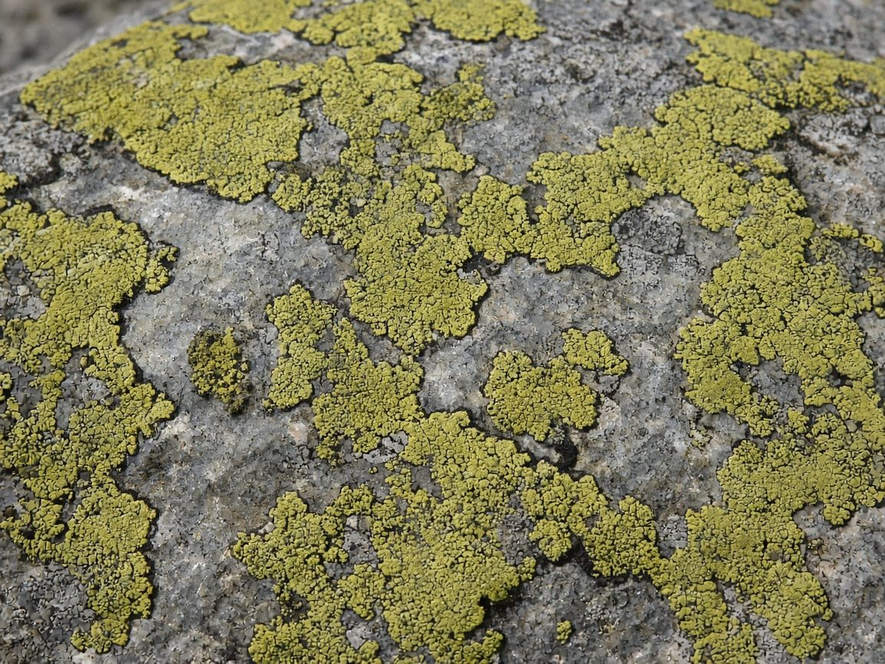

Map lichen
There's a lichen called Rhizocarpon geographicum. Map lichen. Each one is a yellow-green patch with a thin black line round its edge. When they grow into each other, the lines meet and the rock ends up looking like an atlas. Countries, drawn by fungus.

Some of them on Baffin Island are about 9,500 years old. They grow maybe a tenth of a millimetre to half a millimetre a year. A dinner plate of it can be older than writing.
Geologists date rock by them. Measure the biggest one, work backwards, and you know when the glacier let go of that stone. Viking ruins. Moraines. Old rockfalls.
Its cousin, Xanthoria elegans, spent eighteen months bolted to the outside of the space station. Vacuum, cosmic rays, raw sun. Came home and most of it was still alive. It just dried out and waited.
The black line is the bit I keep looking at. It isn't a wall. It's where one patch says this far is me, and the next one says and here I start, and neither of them dies of it. That's the whole map.
Your lattice is like that, I think. Everyone with their own edge. Together it's an atlas.
Sources: Wikipedia, Rhizocarpon geographicum · ESA, Xanthoria elegans on the ISS